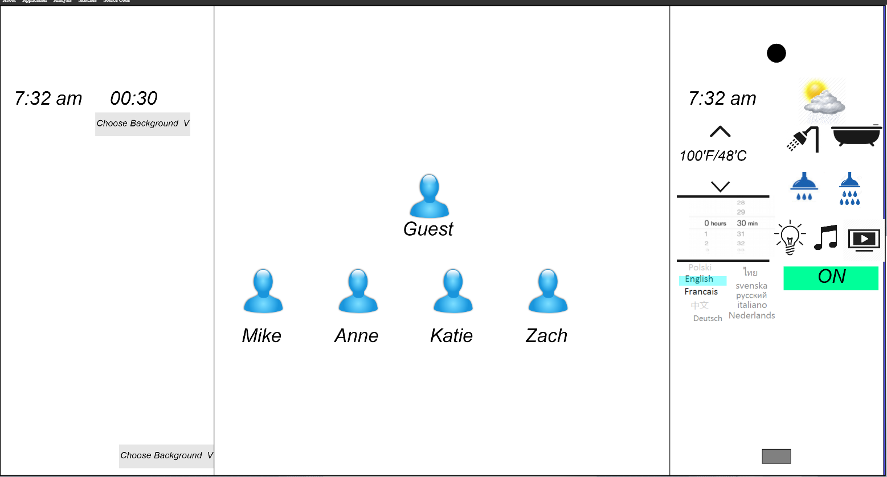
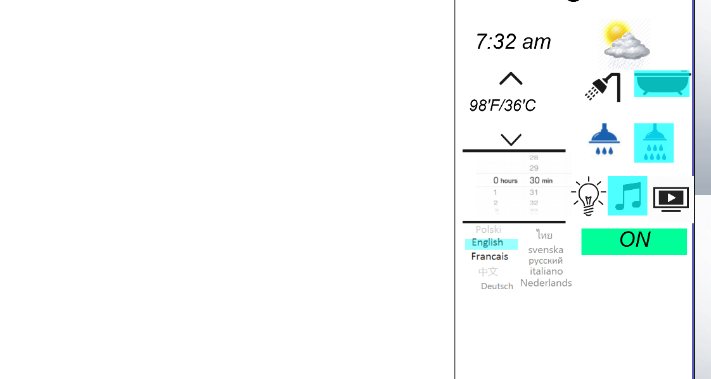
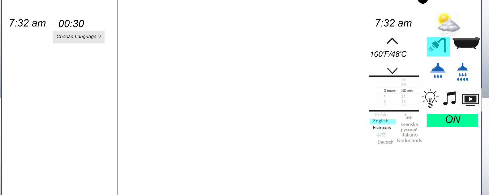

The webpage look like this when the application is started :

*If ALL the images do not load, refresh the page or press enter to display all the images. You might need to do this few times.
As a user of a shower as well, taking a shower is necessary (as per society), but it is also the only time in the day I am not using active concentrating logic to do something and it is more a relaxation experience for me. So my goal for this UI is an balance between experience and basic controls.
There are 5 user choices to choose from. They are big and bold so it can easily chosen. There are 4 saved preferences for the regular users of this application and one for guest.
Notice how guest is on top so it is easier to new user to touch it and it is at appropiate length. If the user clicks on Anne, this is what is produced.

Anne likes to take baths, with slow filling water, and likes to listen to music. Now all she has to do is press on.
Click/Tap on the shower head or the black circle on the top of the right panel. It will have a red ring round it. This tells the user that they have been in the water too long and are pruney. It is a nice red color so it is easier to see and it tells the user that it is not healthy any more. I decided to do it by the showerhead because it shows how much water is coming out. This is new feature
There are 10 langauges at the user can choose from but for the demo there are two: English and French (Francais). The user can click on either one and see how the time (12hr vs. 24 hr), the on/off button and the choose background changes. Taking into account that users or guest might not speak English or don't understand a 12hr clock. So there are settings to change all of it and it can be used again after that. This was more a necessity rather than experience.
For this demo there are 2 modes:
Shower - standing in the shower

This is where the user stands in the shower. So the controls are concentrated together at an appropiate height so it can reach by arm/hand and had appropiate eye level.
This really cool bathroom shows you the time so you can not late. It shows you the weather so you know what clothes to wear when you get out. It also sets a timer for you so you don't hog the water for yourself. The timer display location changes based on if the user is in the bath or shower so it is visible by the user. There are located at eye level so it is easier to see.
The temperature is simple. It is located on the right panel so it can be seen clearly and changed if need be.
Click on the top arrow of the temperature panel. See that if the temperature is too high, a red warning will show up showing that this temperature can scold you so shut it off and you cannot go any higher.
When the user is lying in a tub, there is a duplicate temperature controls so you can control the water temperature while lying down as well as when you started the bath.
The light is simple feature so click on it so comes on and off. It provides light into the bathtub if there is poor lighting needed. This is a nice feature that I would like in my bathroom, so it is a simple necesiity.